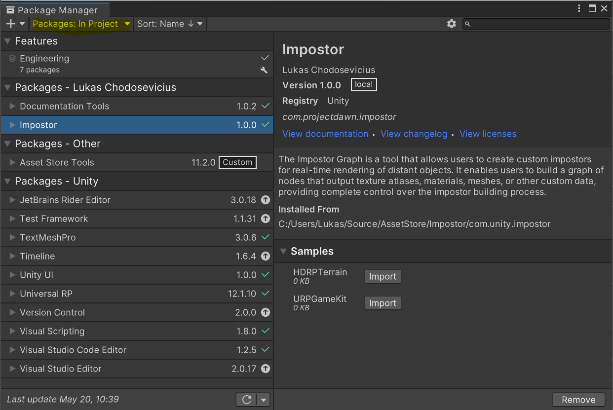
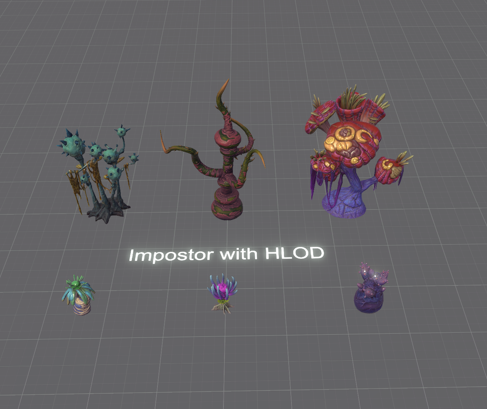
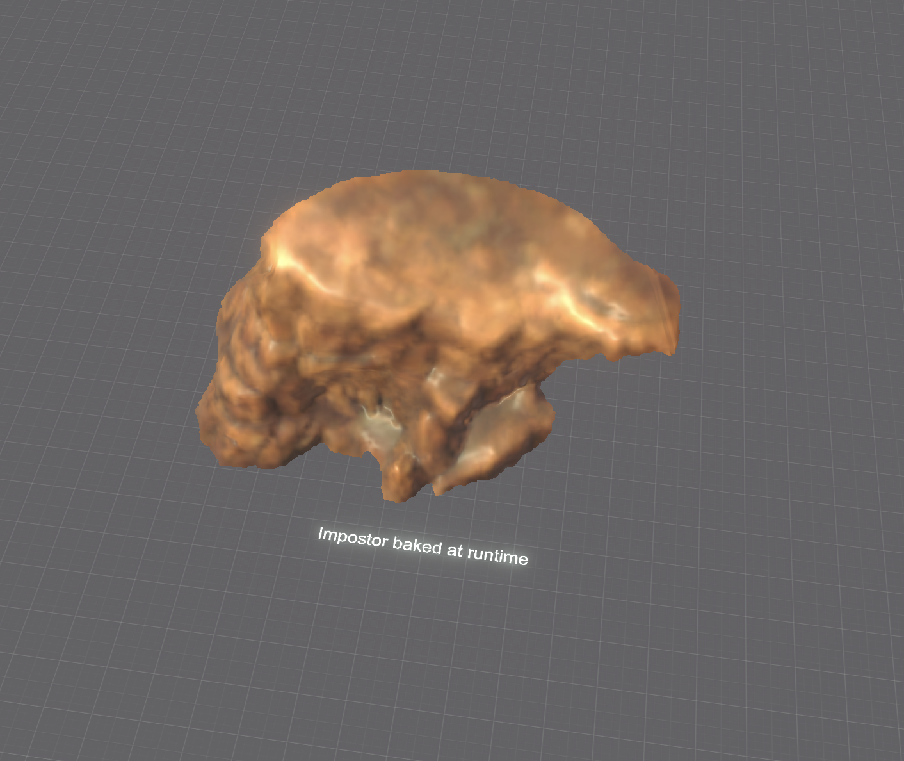
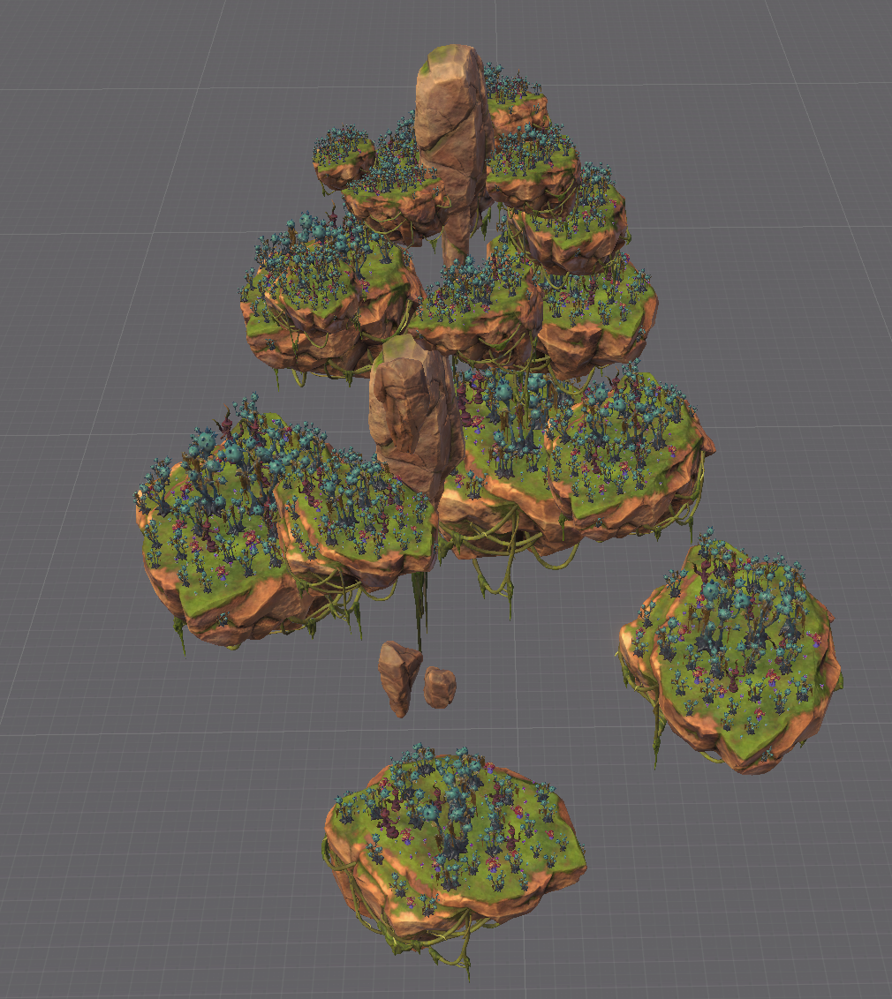

Samples
In a package folder named Samples you can find projects that showcase possible use cases.
Samples in this package are contained in a hidden folder named Samples~ and they can be imported using Package Manager.
This allows package to be lighter if samples are not used.
To import samples, follow these steps:
- Click menu item
Window/Package Managerto open package manager window. - Make sure you selected tab
Packages: In Project. - Find package
Agents Navigation. - Find button
Samplesand click it.
Node. Make sure tab
Packages: In Projectis selected. 
For more information check https://docs.unity3d.com/2022.2/Documentation/Manual/cus-samples.html.
URPGameKit
This sample project shows usage of Impostor with Universal Render Pipeline. Sample contains these scenes:
URPGameKitVegetation - shows how to use impostor with LOD Group.
URPGameKitRockRuntime - shows how to use impostor that is baked at runtime.
URPGameKit - synthetic performance test that uses lod. By pressing ESC button, it switches between using impostor and not.
URPCustomRenderMode - shows how to bake impostor by capturing custom data instead of common like base color, normal, depth.
HDRPTerrain
This sample project shows usage of Impostor with High Definition Render Pipeline.
- HDRPTree - simple impostor tree.